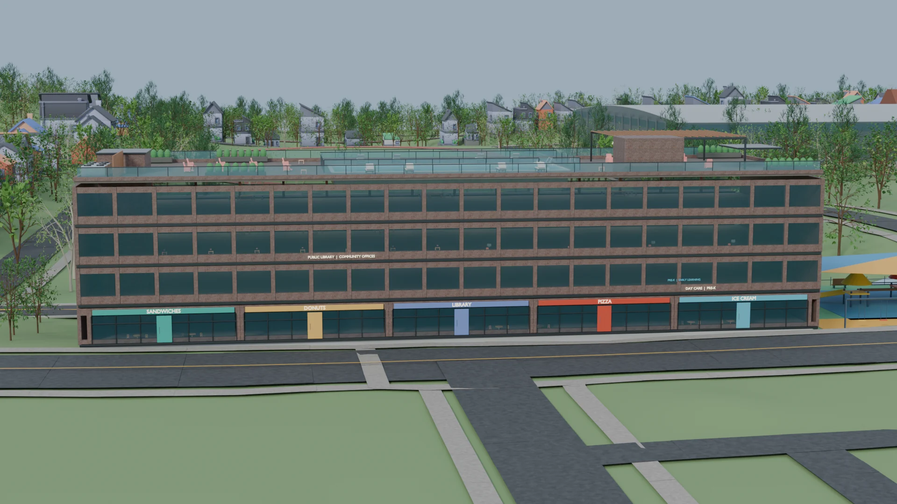
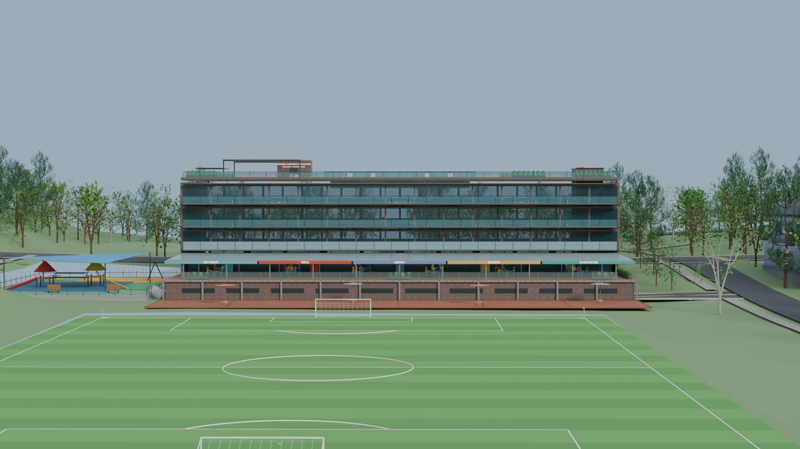
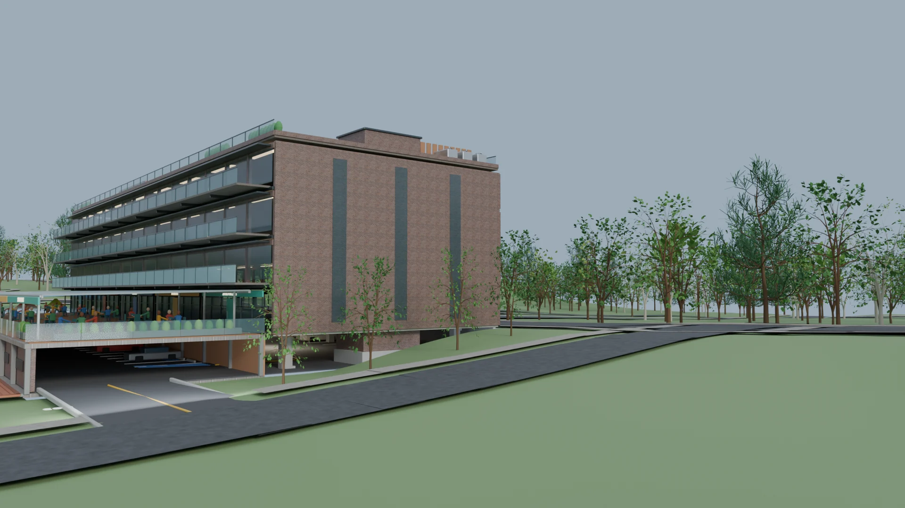

A community & education concept
A Community Building for Everyday Life
Early learning, a library, local food, and places to gather. One neighborhood building, with life from morning through evening.
Explore the building ↓The idea
More reasons to come.
Every day.
Children arriving for early learning. People using the library. Neighbors meeting with community organizations. Families eating along the field. Residents gathering on the terraces and rooftop.
The idea is to bring public services, education, local businesses, and community space together in one compact footprint, leaving more of the surrounding land available for recreation and open space.
What’s inside
Different uses.
A shared daily life.
Small businesses at ground level, education and community uses above, and outdoor places to gather: a vertical mix, with the exact arrangement still open to change.
These uses reinforce each other. A parent dropping off a child could visit the library or grab food. Community events could spill outdoors, and activity on the field could support the businesses. Different schedules keep the building occupied throughout the day.
- Neighborhood food & retail
- Small ground-level storefronts facing the street and/or field—sandwiches, pizza, donuts, or ice cream—give people a reason to stop by even without a visit to a civic program.
- Public library
- An everyday neighborhood resource for reading, learning, and connection, also part of the larger education and community complex.
- Early learning
- Space for pre-K, daycare, and early-childhood programs, giving families access to education close to other neighborhood services.
- Community space & offices
- Flexible rooms for neighborhood organizations, nonprofits, meetings, classes, and other community-serving programs.
- Outdoor gathering space
- Terraces and rooftop space with seating, landscaping, and room for events or simply spending time together.
A front door to the neighborhood
Built to Face the Neighborhood
The street-facing side is conceived as a row of small, recognizable destinations, with highly visible entrances. Food, library, and community uses create reasons to walk here even when no major event is underway.
Library and early-learning spaces above the storefronts bring daily life to the upper floors. Windows and brick break up the building’s face, helping it feel approachable and active rather than like a blank institutional edge.
{kind=link}
The field becomes the backyard
A Building That Opens Onto the Field
The concept treats the soccer field as the building’s second front door. Restaurants and common areas open toward a broad lower terrace overlooking the field, putting everyday activity along the edge of the park.
Someone could eat, sit, watch children play, catch a soccer game, or simply enjoy the park. The food businesses could serve both the street and the recreational side of the site.
{kind=link}

View larger ↗Along the field. A place to stay before practice, after a game, or on an ordinary afternoon.
Up on the rooftop. Another shared outdoor space for neighbors and events, with landscaping, seating, and views over the surrounding site.
Put the cars underneath, not around it
Parking Without Giving the Site to Parking
Surface parking consumes land that could otherwise be a field, playground, trail, or green space. This concept uses the slope of the site to tuck parking beneath the occupied building and terrace, keeping cars largely out of view from the park-facing side.
Vehicles enter from the end of the building. Separating that entrance from the main pedestrian frontage helps make both the street and field sides more comfortable for people on foot.
The north end of Connally Street becomes a two way street allowing cars to exit to Georgia Ave. South of the building remains a one-way to maintain current usage.
{kind=link}

View larger ↗The larger purpose
Why combine all of this?
It conserves land.
Stacking public uses takes considerably less land than separate one-story buildings and parking lots, leaving more room for open space and recreation.
It shares infrastructure.
The library, early-learning programs, community organizations, retail, and event spaces can share entrances and routes through the building, parking, outdoor spaces, and common areas.
It creates activity all day.
Early education brings morning and afternoon activity. The library can serve people during the day and evening, food businesses can stay open later, and community events can happen nights and weekends.
It connects civic uses to recreation.
Terraces and public-facing uses sit deliberately along the field, making the building and park part of the same everyday experience.
It serves the neighborhood even when no event is happening.
A book to borrow, a child to drop off, a meal with family, a place to meet. These are daily reasons to come here, giving residents something useful throughout the week, beyond the occasional big event.
The goal is not simply to put more things on the site. It is to make the same piece of land do more for the neighborhood, every day.
These images show an early conceptual design. Building layout, tenants, programming and architectural details are illustrative and would change through planning, community input and design.